Released on January 27, 2010
(Next Release on February 3, 2010)
EIA Invites Comments on Information Needed to Support Its Energy and Financial Markets Initiative
The Energy Information Administration (EIA) is seeking comments and recommendations on information needed to support analysis and increased understanding of energy markets, in support of the Energy and Financial Markets Initiative announced on September 9, 2009. A notice appeared today in the Federal Register describing topics of particular interest, as well as procedures for public comment over the next 60 days. The notice does not itself propose new EIA information collection. Comments received will shape EIA plans to fill key information gaps, and, if such plans include any new information collection, EIA would solicit further public input and seek approval for any such collection by the Office of Management and Budget.
This Initiative recognizes that energy markets have developed in ways that were not anticipated at the time EIA’s information program was established. In addition to the factors EIA has historically tracked, such as production, consumption, inventories, and spare capacity, EIA is interested in assessing other market influences, such as speculation, hedging, investment, and exchange rates. The Federal Register notice complements other activities under this Initiative by inviting comments and recommendations that will help in identifying the best data for understanding energy and financial markets.
Four broad topic areas are outlined in the Federal Register notice to stimulate – but not limit – public input. First, EIA is considering how to identify information about energy market behavior, including physical oil assets, exchange-traded futures and options, behavior in over-the-counter markets for financially-settled swaps, options and other derivatives, and other types of financial market data. This topic logically extends to the appropriate level and frequency of the information as well as the types of recurring reports and analyses EIA could produce. Second, EIA is considering ways that market information could be obtained from other sources, including other Federal agencies and non-governmental sources, to assure that EIA’s collection activities do not impose an undue burden. Third, EIA is inviting comments on whether – and with what priority—it would be of value either to accelerate the release schedules for information currently collected or to increase the frequency of data collection and release. Finally, with respect to petroleum markets, EIA is interested in views on whether customers would benefit from a more detailed treatment of crude oil quality differentials in the pricing, landed cost, inventories, and supply levels.
The Federal Register notice asks that comments on these and other topics be sent, preferably as a Word attachment to an e-mail, to (karen.robinson@eia.doe.gov), or by FAX (202-586-3873). The mailing address is Office of Oil and Gas, EI-40, Forrestal Building, U.S. Department of Energy, 1000 Independence Ave., S.W., Washington, D.C. 20585. Alternatively, Karen R. Robinson may be contacted by telephone at (202) 586-2585.
Gasoline and Diesel Fuel Prices Decline
Declining for the second week in a row, the U.S. average price for regular gasoline dropped three cents to $2.71 per gallon, $0.87 above the average a year ago. While the average in the Rocky Mountains increased by less than one cent to stay at $2.62 per gallon, prices slipped in all other regions. On both the East and the Gulf Coasts, the averages dropped about three cents to $2.72 and $2.59 per gallon, respectively. The largest drop occurred in the Midwest where the average fell six cents to $2.62 per gallon. On the West Coast, the average slipped a penny to $2.94 per gallon. In California, the average fell two cents to $3.01 per gallon.
Diesel prices also decreased for the second consecutive week, with the national average dropping four cents to $2.83 per gallon. The average is $0.57 above the price a year ago. Diesel prices declined throughout the country. On the East Coast and in the Midwest, the averages each fell about four cents to $2.88 and $2.79 per gallon, respectively. On the Gulf Coast and on the West Coast, the averages dropped about three cents to $2.80 and $2.92 per gallon, respectively, with the California price dipping two cents to $2.99 per gallon. In the Rocky Mountains, the price slipped a penny to settle at $2.82 per gallon.
Propane Inventories Fall Again
After logging the largest two-week stock draw in nearly three years, inventories were pushed down to an estimated 36.8 million barrels, after losing 4.3 million barrels this past week. U.S. inventories of propane remained below the lower limit of the average range for this time of year. More than half of the weekly stock draw occurred in the Gulf Coast region, which drew 2.5 million barrels, while the Midwest region declined 1.6 million barrels. The Rocky Mountain/West Coast inventories fell 0.3 million barrels. East Coast regional stocks saw a slight build last week. Propylene non-fuel use inventories increased their share of total propane/propylene stocks from 8.3 percent to 8.4 percent.
Residential Heating Oil Prices Decrease
Residential heating oil prices fell during the week ending January 25, 2010. The average residential heating oil price dropped 5.3 cents per gallon to reach 289.9 cents per gallon, but was still 49.9 cents per gallon higher than the same time last year. Wholesale heating oil prices decreased 11.3 cents per gallon to reach 202.8 cents per gallon, 45.8 cents per gallon higher than at this time last year.
The average residential propane price gained 0.5 cent per gallon to reach 267.6 cents per gallon. This was an increase of 35.2 cents per gallon compared to the same period last year. Wholesale propane prices rose 8.5 cents per gallon to reach 143.3 cents per gallon. This was an increase of 53.1 cents per gallon when compared to the January 26, 2009 price of 90.2 cents per gallon.
Text from the previous editions of “This Week In Petroleum” is now accessible through a link at the top right-hand corner of this page.
| Retail Prices (Cents Per Gallon) | |||||||
| 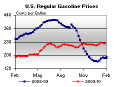 | 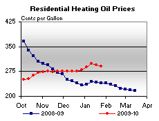 | ||||||
| 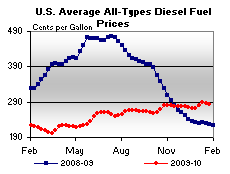 | 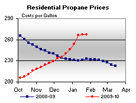 | ||||||
| Retail Data | Changes From | Retail Data | Changes From | ||||
| 01/25/10 | Week | Year | 01/25/10 | Week | Year | ||
| Gasoline | 270.5 | Heating Oil | 289.9 | ||||
| Diesel Fuel | 283.3 | Propane | 267.6 | ||||
| Spot Prices (Cents Per Gallon*) | |||||||||||||||||||||||||||||||||||
| 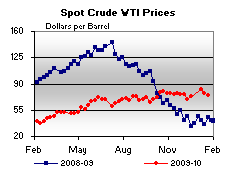 | 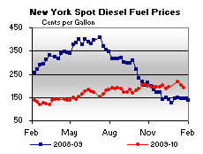 | ||||||||||||||||||||||||||||||||||
| 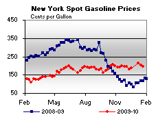 | 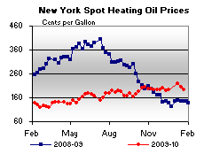 | ||||||||||||||||||||||||||||||||||
|
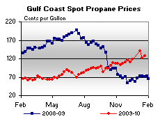 | ||||||||||||||||||||||||||||||||||
| *Note: Crude Oil WTI Price in Dollars per Barrel. | |||||||||||||||||||||||||||||||||||
| Stocks (Million Barrels) | |||||||
| 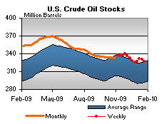 | 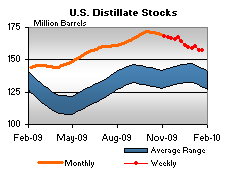 | ||||||
| 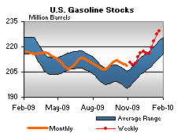 | 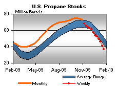 | ||||||
| Stocks Data | Changes From | Stocks Data | Changes From | ||||
| 01/22/10 | Week | Year | 01/22/10 | Week | Year | ||
| Crude Oil | 326.7 | Distillate | 157.5 | ||||
| Gasoline | 229.4 | Propane | 36.813 | ||||